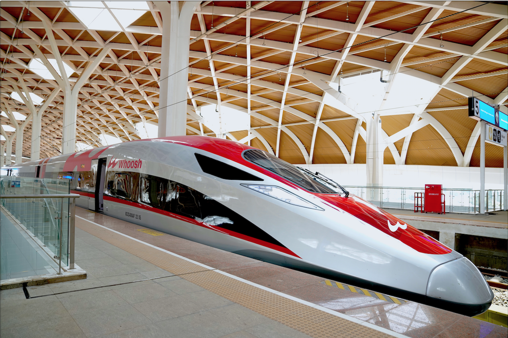
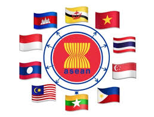
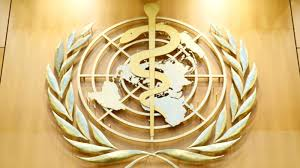
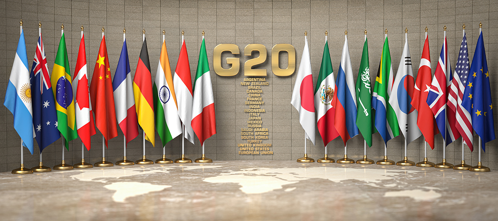
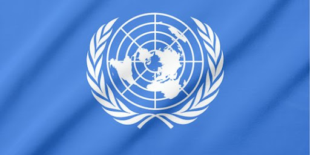

Kerja sama bilateral merupakan kerja sama antar 2 negara yang disepakati secara formal (biasanya tertuang dalam perjanjian MoU), memiliki tujuan untuk melakukan pembangunan berkelanjutan pada kedua negara (saling menguntungkan). Contoh dari kerja sama bilateral adalah Program Belt and Road Initiative (BRI), hasil kolaborasi Indonesia dengan Tiongkok. Program ini mewujudkan adanya kereta cepat Jakarta-Bandung (WHOOSH) di Indonesia.
Kerja sama regional adalah merupakan kerja sama beberapa negara yang berada dalam suatu wilayah/kawasan tertentu. Contoh dari kerja sama regional adalah Association of Southeast Asian Nations atau yang lebih dikenal sebagai ASEAN. ASEAN bergerak dalam mewujudkan perdamaian dunia serta memajukan kesebelas negara anggotanya dari Asia Tenggara (Indonesia, Malaysia, Filipina, Singapura, Thailand, Brunei Darussalam, Vietnam, Laos, Myanmar, Kamboja, dan Timor Leste).
Kerja sama multilateral adalah kerja sama yang melibatkan lebih dari 2 negara tanpa memandang batasan wilayah. Contoh kerja sama multilateral seperti World Health Organisation (WHO) yang bergerak dalam bidang kesehatan.
Menurut Dougherty dan Pfaltzgraff, kerja sama internasional adalah hubungan yang dijalin antar negara tanpa adanya kekerasaan maupun paksaan. Sementara itu, Koesnadi Kartasasmita mengutarakan pendapatnya bahwa kerja sama internasional adalah hubungan internasional dan akibat dari adanya penambahan hal kompleks dalam hidup manusia dalam konteks masyarakat internasional. Ada pula pendapat Theodore A. Couloumbis dan James H. Wolfe yang menyatakan bahwa kerja sama internasional merupakan hubungan secara internasional berupa interaksi antar warga dari negara berbeda. Jadi, secara sederhana, kerja sama internasional adalah kerja sama yang mencakup sebagian besar bahkan seluruh negara di dunia. kerja sama internasional bertujuan menyelesaikan masalah dalam lingkup global. Kerja sama ini dapat terdiri dari ketiga jenis kerja sama lainnya; bilateral, regional, dan multilateral. Contoh kerja sama internasional seperti G20 (Group of Twenty) yang fokus dalam pembangunan ekonomi negara, World Trade Organization (WTO), International Monetary Fund (IMF), Konferensi Asia Afrika (KAA), dan juga Sustainable Development Goals (SDGs) yang dirancang oleh Perserikatan Bangsa-Bangsa (PBB).